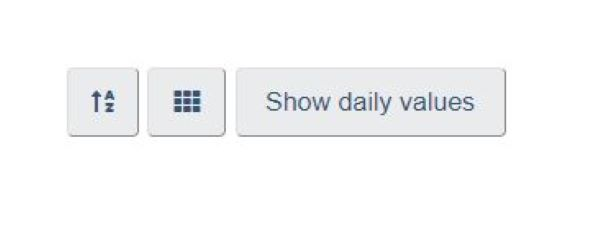
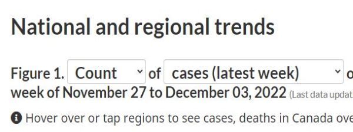
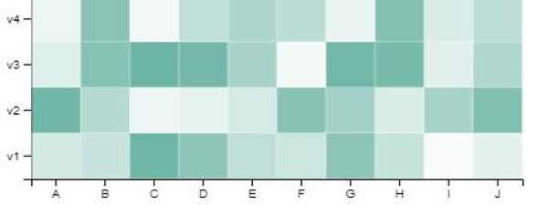
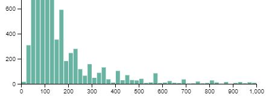
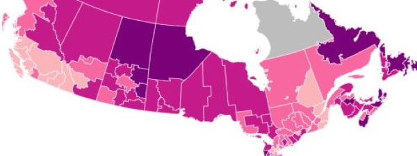

Health Infobase Design Manual
Table of contents
Pattern library
Sections
-
Bar graph
Show relationshipsA bar chart is a visual representation of data that uses bars to show the relative values of different data points.
-
Customization buttons
InteractionButtons used to modify the graph: sorting, changing from list to tiles, changing size, going from absolute to relative, etc.
 -
Drop-down selector
InteractionDrop-down selections allow users to choose between different options.
 -
Heat map
Part to wholeA heat map is a visual representation of data that uses color to show the values of two or more variables.
 -
Histogram
DistributionA histogram is a visual representation of data that uses bars to show the frequency or number of observations within a given range of values.
 -
Key highlights
Single valueKey highlights tiles are used to draw attention to the key insights from the data product.
-
Line chart
Capture a trendA line chart is a visual representation of data that uses a series of connected data points to show the values of different data points over time.
-
Map
DistributionA map is a visual representation of geographical data, from simple geographic boundaries to complex statistical information.
 -
Pie chart and doughnut chart
Part to wholeA pie chart is a visual representation of data that uses slices to show the relative sizes or proportions of different data points.
-
Scatter plot
Show relationshipsA scatter plot is a visual representation of data that uses dots or markers to show the values of two or more variables.
-
Tabbed interface
InteractionTabbed interfaces allow splitting a complex data product in multiple sections.


- Date modified: